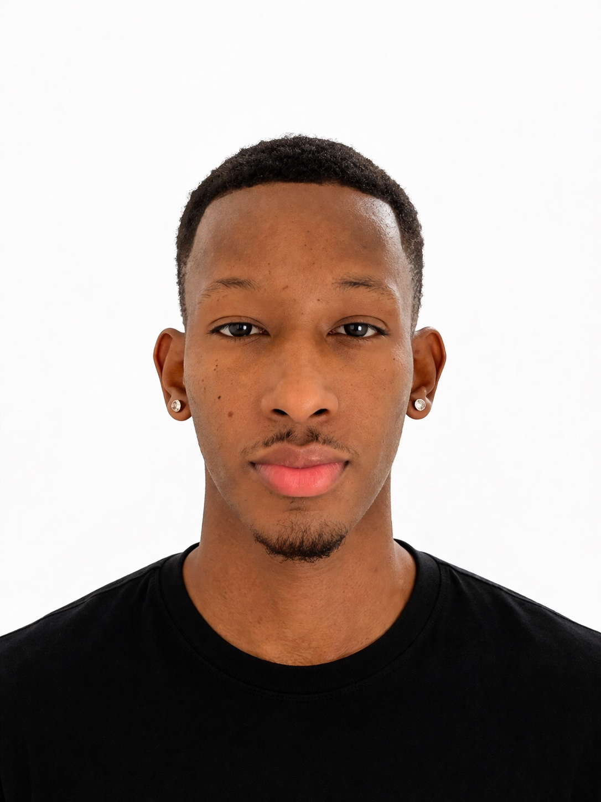

Je transforme les opportunités en résultats grâce à la prospection, la négociation, la relation client et une vraie culture du terrain.

Un profil commercial motivé, sérieux et orienté résultats, avec une expérience concrète en retail, relation client, développement commercial et projet terrain.
Business Developer Junior, je suis passionné par la vente, la négociation, la prospection et la création de relations de confiance.
Je viens du terrain : conseil client, suivi des objectifs, gestion de magasin, fournisseurs, stocks et partenariats.
Intégrer une entreprise ambitieuse pour développer son portefeuille client, contribuer à sa croissance et progresser en B2B.
Des expériences complémentaires entre commerce, management, relation client et gestion de projet.
Gestion opérationnelle d'un point de vente spécialisé rugby et prêt-à-porter.
Conseil client, vente, gestion de rayon et accompagnement dans le choix des produits.
Stage en Côte d'Ivoire sur un projet d'usine de traitement d'eau potable de 150 000 m³.
Des missions concrètes qui montrent mon implication sur le terrain.
Participation à la stratégie de lancement, communication locale et préparation commerciale d'un nouveau point de vente.
Développement de partenariats avec des clubs locaux pour renforcer la visibilité de l'enseigne.
Suivi de marques comme Religion Rugby, Ruckfield, Sir Seven et S.Oliver, avec commandes et volumes.
SMS clients, ventes privées, soldes, affiches vitrine et communication réseaux sociaux.
Accueil, conseil, fidélisation et accompagnement client avec une approche humaine et orientée satisfaction.
Découverte d'un projet complexe dans le BTP avec suivi de chantier et compréhension des contraintes terrain.
Les compétences que je mets au service du développement commercial.
Un parcours orienté commerce, management, relation client et développement business.
ISEG / Groupe IONIS - 2026/2027
Développement commercial, vente B2B, négociation, marketing stratégique et gestion de projets commerciaux.
ICADEMIE - 2024/2026
Gestion d'un point de vente, relation client, management d'équipe et développement commercial.
Customer Care Representative - ISON
Savoir-être en entreprise - Supplay
Conduite et déontologie des magistrats - ONU/SPARK
Je suis ouvert aux opportunités en alternance dans le développement commercial, la vente, la prospection, la relation client ou le Business Development.